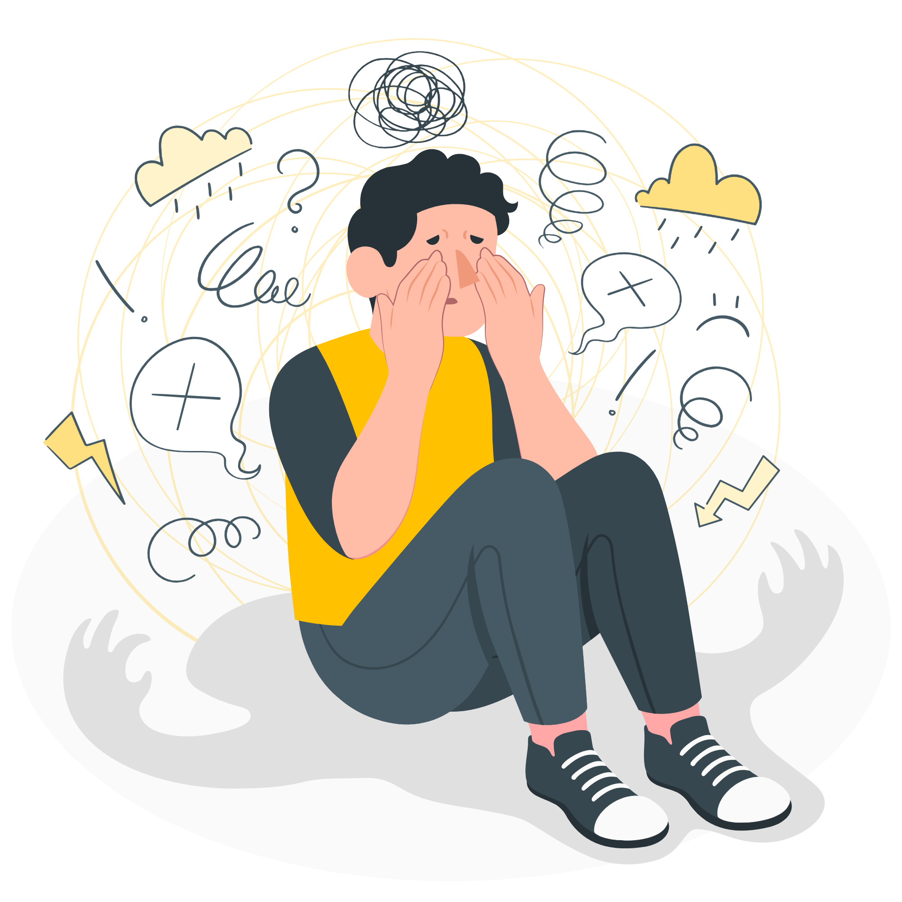

GEJALA
Penyakit anxiety disorder atau gangguan kecemasan ini menimbulkan beberapa gejala seperti seringnya merasakan rasa khawatir dan resah akan suatu hal yang memang belum terjadi, sulitnya tidur dan berkonsentrasi, mudah marah, pusing, jantung berdebar, nyeri otot, nyeri perut, keringat yang berlebih hingga merasakan sesak napas. seseorang yang merasakan gejala tersebut baru bisa dipastikan mengidap anxiety bila sudah di cek secara medis. pada dasarnya setiap orang pasti pernah mengalami kecemasan, namun ada hal yang perlu diperhatikan untuk memastikan seseorang tersebut mengalami kecemasan yakni dengan melakukan pengecekan secara medis.